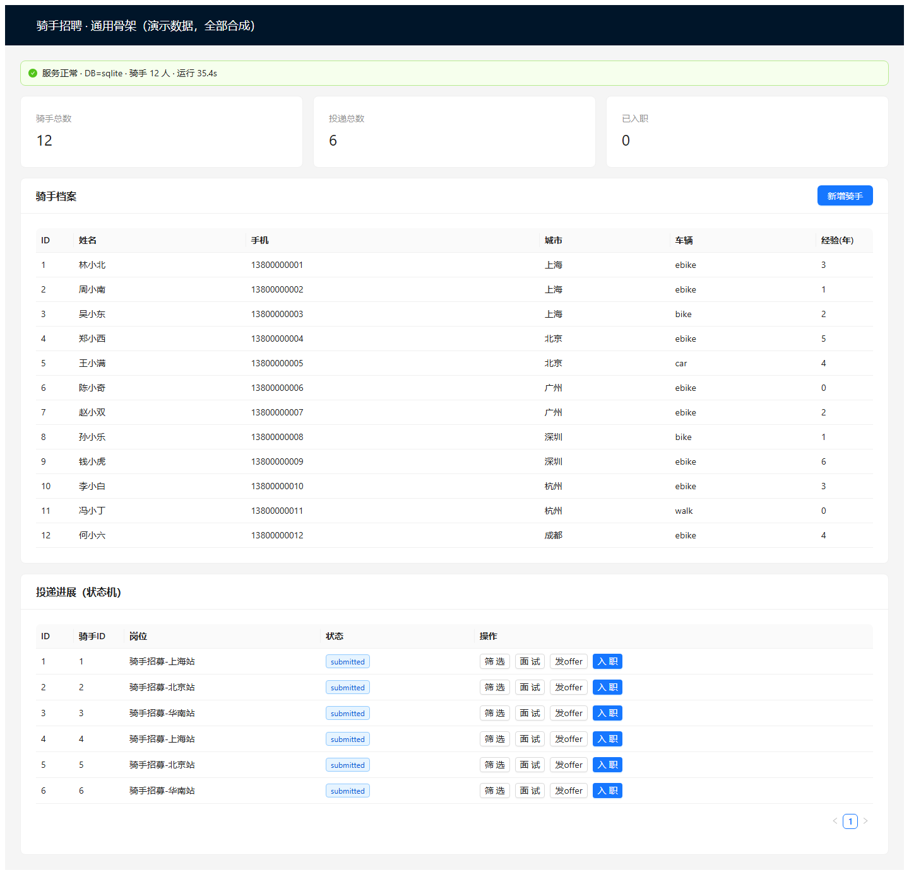

一个能真正跑起来的招聘后台演示：骑手档案增删查、工号（手机号）唯一、重复登记直接返回 409。不是方案文档，是可按下面命令在你机器上复跑的服务。
招聘专员每天要手工登记骑手：姓名、手机号、城市、车辆类型、经验年限。手工登记最常出的两个错是重复录入和状态乱跳（还没面试就被标成已入职）。
409 Conflict，不会产生两条脏数据。submitted → screening → interview → offered → hired，非法跳转（如 screening → hired）直接 409，状态改不动。
uvicorn app.main:app --port 8090 启动后的真实页面，数据为种子合成数据（12 名骑手、6 条投递）。PASS GET /api/health http=200 db=sqlite
PASS GET /api/v1/riders http=200 total=15 page=5
PASS POST /api/v1/riders http=201 id=16 phone=13993797225
PASS POST /api/v1/applications http=201 id=8 status=submitted
PASS POST /api/v1/applications/{id}/transition http=200 status=screening
PASS POST /transition illegal (screening->hired) http=409 illegal transition
PASS GET /openapi.json http=200
SMOKE PASS 7/7
python tests/smoke_e2e.py --base http://127.0.0.1:8090GET /api/health
{"status":"ok","db":"sqlite","riders":12,"time_utc":"2026-11-04T13:00:44+00:00"}
GET /api/v1/riders
{"items":[{"id":1,"name":"林小北","phone":"13800000001","city":"上海",
"vehicle":"ebike","years_experience":3,"note":"合成数据-演示用"}],
"total":12,"limit":20,"offset":0}
POST /api/v1/riders （同一手机号第二次提交）
HTTP 409
{"detail":"phone 13900000001 already exists"}
前置条件：Python ≥ 3.10；不需要任何 key / token（默认 SQLite + 合成数据）；首次启动自动建表并播种；服务监听 127.0.0.1:8090，启动前先确认该端口空闲；命令都在 back/ 下执行。
第 1 条：进目录并装依赖
cd back pip install -r requirements.txt
第 2 条：启动服务
python -m uvicorn app.main:app --host 127.0.0.1 --port 8090
第 3 条：打开地址
http://127.0.0.1:8090
前端已在 front/dist 里打包好，后端启动后会直接托管，不需要再装 Node。接口文档在 http://127.0.0.1:8090/docs。
数据声明：页面与接口里的姓名、手机号、城市全部为合成数据（13800000001 这类连号），不含任何真实个人信息，不对接任何真实骑手库。
这套东西明确不做：
如果需求里包含上述任一项，说明这套骨架只覆盖了「档案 + 状态机」那一半，另一半需要单独评估与排期。
包含后端（FastAPI + SQLite + 状态机）、前端源码与已打包产物、冒烟脚本、Dockerfile 与 docker-compose、交付说明。已剔除本地数据库与缓存，解压即干净。
下载源码包（348 KB）工期：同类需求（骑手 / 招聘 / 后台档案管理）在确认验收口径后 3 个工作日内按需求裁剪交付；当前这套骨架开箱即可运行。
验收方式：按上面的接口清单逐条复跑，再执行 python tests/smoke_e2e.py --base http://127.0.0.1:8090，期望 7/7 PASS；状态机非法跳转必须返回 409。